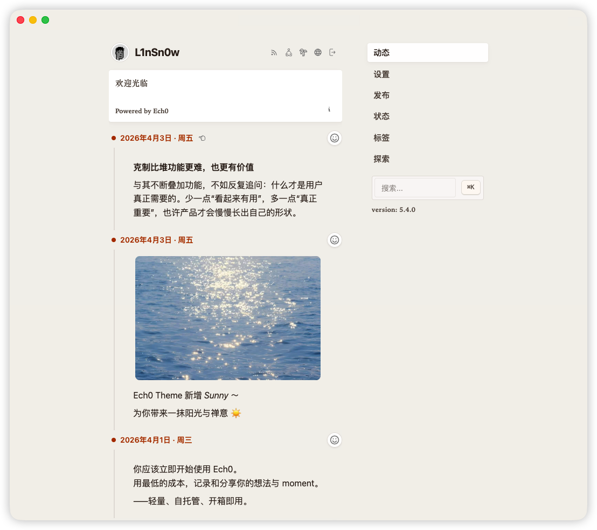

Ech0
一个属于自己的个人时间线。
Self-hosted · Open Source · Personal Timeline
github.com/lin-snow/Ech0
02 — The Story
笔记擅长保存，平台擅长分发，中间缺一个属于自己的空间。
03 — The Story
Ech0 是一台装在你服务器上的个人时间线。
Personal
围绕个人表达与内容积累
Publishable
公开或按权限分享内容
Interactive
评论、Reactions 与分享
Self-hosted
数据与运行环境由自己掌控
不是又一个笔记工具，也不是又一个社交网络。
04 — The Product
Write→Enrich→Publish→Interact→Discover

05 — The Product
自托管不只是「服务跑在自己机器上」，
更要紧的是数据能被理解、备份、带走。
06 — The Product
$ docker run -d \
-p 6277:6277 \
-v ./data:/app/data \
sn0wl1n/ech0:latest目标不是最小镜像，是让安装、升级、备份形成一条清晰的路径。
07 — The Product
开放的价值不在接口数量，在你能否用别的方式管理自己的时间线。
08 — The Engineering
Clients
Vue 3 Web · CLI · TUI · External clients
Application
Gin / HTTP · SSH · MCP
Core
Handler · Service · Repository
Data
SQLite · VireFS · Full-text / Vector Index
Infrastructure
Busen · Async Tasks · Webhooks
Clear boundaries. One deployable application.
09 — The Engineering
Busen Event Bus
VireFS Storage Abstraction
两个抽象都来自重复成本，不是为了多加一层。
10 — The Engineering
Reliability 长期运行
Security 访问控制
能恢复、能控权，才算真的拥有。
11 — The Engineering
Copilot In-product
MCP External integration
两者都不是「把数据库交给模型」。
12 — The Impact
2,100
GitHub Stars
164
Forks
91,829
Docker Pulls
26
Contributors
HelloGitHub 2025 · Go 类项目 Top 1 | 《科技爱好者周刊》收录推荐 | 数据截至 2026-11-18
13 — The Impact
Creator · Maintainer · Full-stack Engineer
14 — The Impact
让想法自然流动。
Websiteech0.app
GitHubgithub.com/lin-snow/Ech0
LicenseAGPL-3.0-or-later